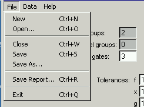
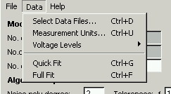
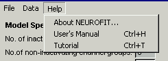

File, Data, and Help Menus

File Menu
The File pull-down menu allows you to:
- open a "New" NEUROFIT project window
- "Open" an existing NEUROFIT project
- "Close" a NEUROFIT project window
- "Save" a NEUROFIT project (or "Save As..." to specify a different
file name if the project already has a name)
- generate a fitting report text file with "Save Report...".
The report gives a synopsis of the model and data and
the fitted values and results.
- "Exit" NEUROFIT
Saving a project will save all of the information from the
Model Specifications,
Algorithm Specifications,
and Data Display Panels,
including the names of the data files
and the fitting and noise calculation regions used for each sweep.
In additon all of the information in the
Model Parameters Panel
is saved except for the standard errors.
By default, a NEUROFIT project file is given the extension
nfp.
It is recommended that you do not save any project files in
the NEUROFIT directory itself, otherwise, you risk losing those
files if and when you download and install a newer version
of the NEUROFIT software.

Data Menu
The Data pull-down menu allows you to:
- "Select Data Files..."
- specify "Measurement Units..."
- specify the "Voltage Levels" for either the varying step data or the
varying prestep data. (also available from the "Voltages..." buttons above
the graphs)
- do a "Quick Fit" or "Full Fit" (also available from the buttons on
the main NEUROFIT window)

Help Menu
The Help pull-down menu allows you to:
- See some basic information "About NEUROFIT"
- Open up the "User's Manual" in a web browser
- Work through a "Tutorial"